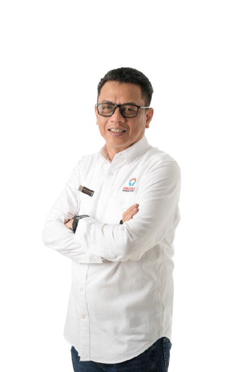

MENGAWASI PELAYANAN
PUBLIK DI SULAWESI
SELATAN
Untuk Sulsel yang lebih baik dan bermartabat
PELAJARI LEBIH
Untuk Sulsel yang lebih baik dan bermartabat
PELAJARI LEBIH
Akses cepat layanan publik dari Ombudsman Republik Indonesia Pusat untuk memudahkan kebutuhan administrasi dan pelaporan Anda.